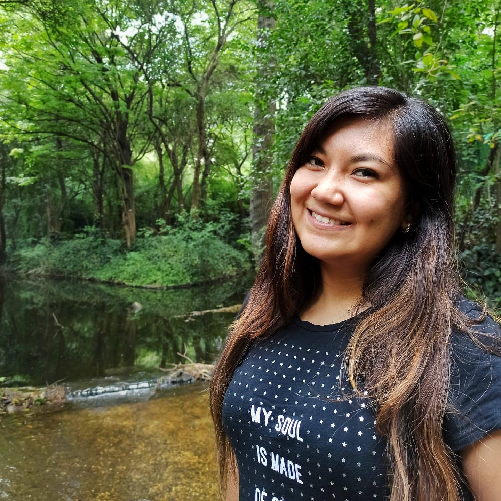
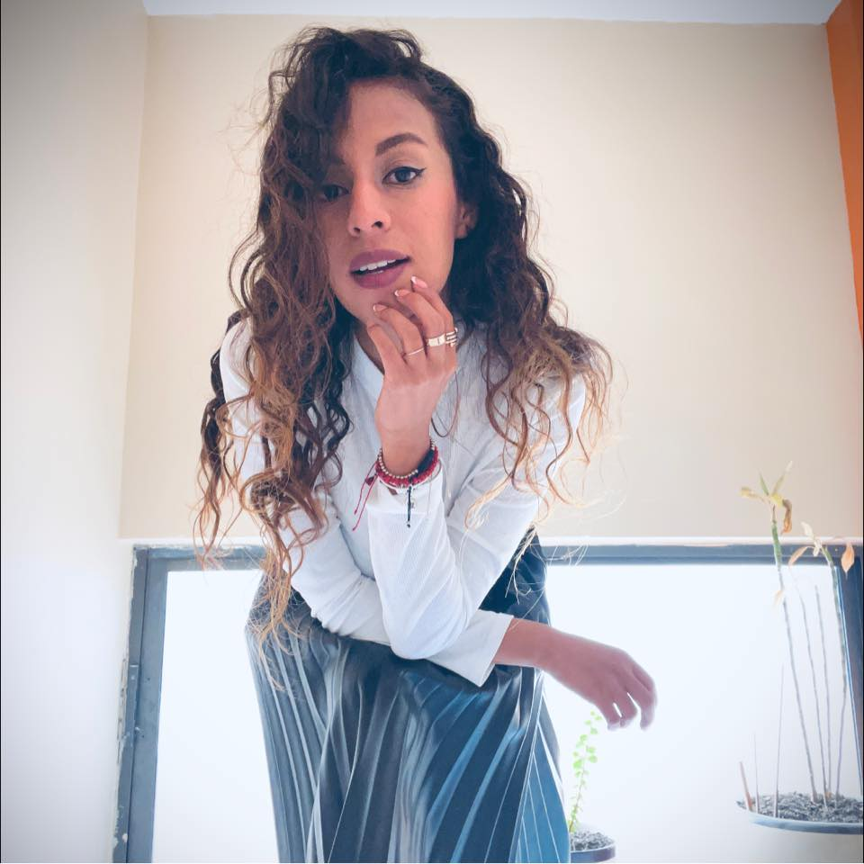

Servicios
¿Te interesa que te acompañe de una manera más personalizada en tu proceso?
Te ofrezco mi plan
Cambiando desde la raíz
en donde te acompaño de una manera más personalizada.
Desde hacer el súper juntos, hasta ir a tu cocina a enseñarte a elegir de manera más consciente tus alimentos.
¡Sin dietas específicas!
Tipos de dietas
Dieta cetogénica:
Con un enfoque en la pérdida de peso, se mejoran defensas y es parte del tratamiento en multiples enfermedades (síndrome de ovario poliquístico, síndrome metabólico, obesidad y dislipidemias).
Dieta hipocalórica:
Con enfoque en pérdida de peso, un proceso más lento y menos restrictivo. Parte importante en el tratamiento de enfermedades metabólicas.
Dieta de eliminación:
Con un enfoque para enfermedades y malestares gastrointestinales, además de pérdida de peso. Es parte del tratamiento de enfermedades como: colitis, gastritis, SII, disbiosis, síndrome de intestino permeable.
Dieta Hipercalórica:
Con enfoque en aumento de masa muscular.
Dieta de mantenimiento:
Plan de alimentación para mantener tu peso y adquirir hábitos de alimentación saludables.
Consulta Presencial y En línea
Para primeras consultas, te sugiero tener tiempo y estar sin distracciones.
Dietas Especializadas
Cetogénicas, Ayunos Intermitentes, Hipercalóricas e Hipocalóricas.
Adaptadas a ti y a las necesidades de tu cuerpo.
Las mejores combinaciones de todos los alimentos que disfrutas. No te sentirás en una dieta, te lo aseguro.
Ideales para aquellas personas que buscan la pérdida de peso, aumento de masa o mejorar su salud.
Tratamientos Corporales y Faciales
Cavitación
Es un tratamiento que se enfoca en la eliminación de la grasa acumulada en zonas concretas y localizadas.
Vacumterapia
Técnica de aspiración mecánica ideal para disminuir la celulitis, incentivar la producción de colágeno y elastina, mejorar la circulación, relajar la musculatura, y reducir la tensión en el cuerpo.
Radiofrecuencia (facial y corporal)
Ondas electromagnéticas que el cuerpo asimila en forma de calor, ideales para tratar la flacidez.
Lipoláser
Técnica basada en luces led que favorece la eliminación de grasa y la reducción de celulitis.
Agenda tu valoración sin costo
Mis reseñas
-

Me encanta la consulta, se ajusta súper bien a las necesidades y es muy flexible en cuanto horarios y costos, siempre se encuentra una asesoría completa y notas los cambios súper rápido!!
Calor VelSan
Súper recomendado!!! -

Me alegra mucho estar en el mundo de la nutrición y más que comencé con Valeria. He avanzado mucho en las metas que tengo y en las cuales me sentía estancado.
Ricardo Lemus -

Recomiendo ampliamente a Vale como nutrióloga. Es una persona sumamente profesional y dedicada que, en lo personal, me ha ayudado bastante a cuidar mi salud y a alcanzar mis metas.
Pao Galindo